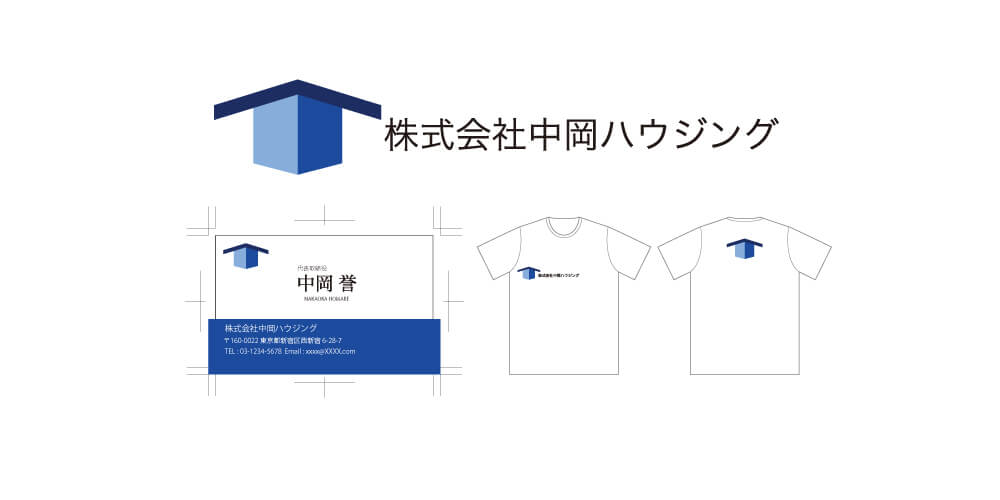
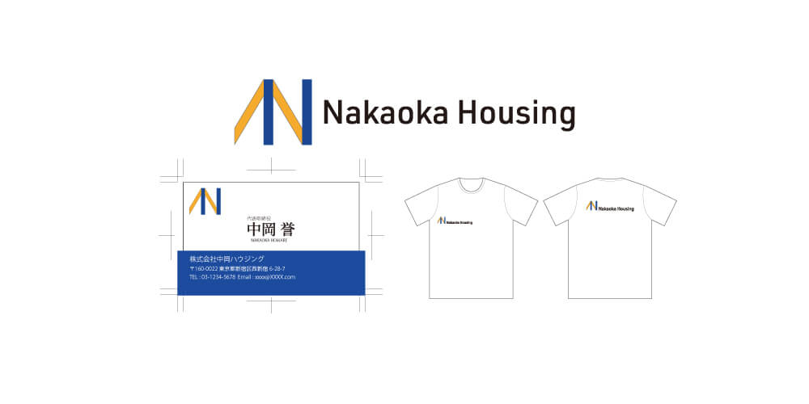

デザイン案1

担当
企画・デザイン
コンセプト
住宅建設会社を想定してのロゴとなります。家を作るというサービスから家とは何なのか？ということを考えました。雨風といった自然の脅威や外敵から身を守るため手段が家であり、その家を構成する主な要素として「屋根」と「壁」が重要な要素であると考えロゴをデザインしました。ロゴマークの屋根部分は日本で最も普及している勾配角度(16.7°~27.7°)内に収め、日本の家づくりを表しています。家は生涯をともにする存在ですので、顧客に対して誠実さを感じさせる紺色をコーポレートカラーに設定しています。
制作時間
3時間
デザイン案2

担当
企画・デザイン
コンセプト
1案目と同様に「屋根」と「壁」がモチーフですが、本パターンはさらに社名のアルファベットもモチーフとして取り入れ、一案目よりも具体的に社名を意識したロゴとしました。紺色のコーポレートカラーは共通としつつ、住まう人を意識させるオレンジも新たに採用しました。ロゴタイプのフォントはURW DINというドイツの高速道路標識にも使用されている欧文フォントを使用し、危険が伴う可能性のある建設現場という環境下でもすぐに判読できるようなデザインを心がけました。